- Overview
- Managing a Datetime Control
- DateTime Control Properties
- Datetime Control Example
- JavaScript in Datetimes
- JavaScript Methods
- Getting Datetimes
- Setting Datetimes
- Manipulating Datetimes with
moment.js - Comparing datetimes
- Adding days to a datetime
- Accessing Datetimes with PHP
Overview
Clicking on a date field opens a calendar popup where users can easily select and input a date. This helps standardize date formats and prevents common mistakes.
DynaForms in ProcessMaker version 3 use the library Bootstrap 3 Datepicker to construct its datetime control. This library bases its format using the library Moment.js, a powerful JavaScript library that manages dates and formats. Take a look at the properties of this control to learn more about how to manage it.
After adding a datetime control to the DynaForm design, it looks as follows:

When running a case with this control, the date picker popup will be available:
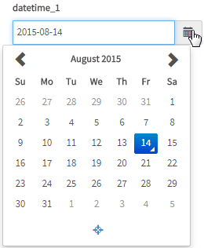
Known Issue: Take into consideration that when there is not enough space for the calendar to display, the control will be displayed cut off.
Managing a Datetime Control
After adding a datetime to the DynaForm design, it is possible to customize its functionality and behavior, using the properties panel.
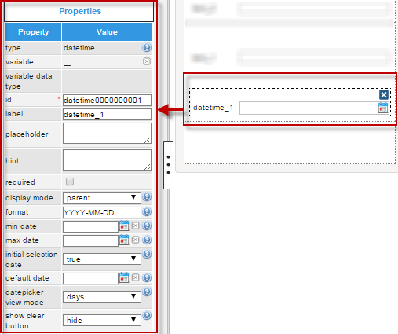
The properties set by default are the following:
- type: Set by default as "
datetime". This definition can not be modified. id: Set by default as
datetime000000000Xwhere "X" represents the corresponding numbering of the control in the design. This numbering starts in 1. After a variable is related to this control, the ID changes to the name of the variable, nevertheless it is possible to set a new ID to work with the control using JavaScript, for example.- label: Set by default as "
datetime_X" where "X" represents the corresponding numbering of the control in the design. This numbering starts in 1. - display mode: Set by default as "
parent". See this documentation for more information of the modes available for this control. - format: Set by default to "
YYYY-MM-DD" which represents the date format "Year-Month-Day". Read the explanation of this property below to learn how to configure the format. - initial selection date: Set by default to "
true" to set the current date in the date picker (when it is opened) and in the field (also when the date picker is opened). - datepicker view mode: Set by default to "
days" to show the days of the month when the date picker is opened. - show clear button: Set by default to "
hide" to not show the garbage icon in the date picker when working with the field in the form. For more information, read the explanation of this property.
DateTime Control Properties
The properties related to this web control are the following:
| Property | Description |
|---|---|
| Type | datetime (readonly) |
| Variable | Click on the ... option to select the variable from the list of available variables. Check this section to learn more of how to relate a variable to a control.
|
| Variable Data type | After a variable has been related to the control, this property shows the data type of the variable (readonly). |
| ID | [Required] Field and HTML unique identifier. |
| Label | Set the label of the control in this property |
| Placeholder | Set the text that will be shown as help to fill the field inside the fields. |
| Hint | Used to show help when the textbox is rendered. It is shown when the pointer of the mouse is hovered over the ? icon. |
| Required | By checking this option, an asterisk is added in the label to indicate that the field is required. It means that an option must be selected mandatorily from the control. When a required field is not filled in with any value, it will not possible to go to the next step. |
| Display Mode | [Required] Display mode:
|
| Format | [Required] |
| Min Date | Define in this property the minimum valid date which will be available in the date picker when rendering
the form. The property can be set in design (using the date picker) or use a variable to define
the value @@MinDate. |
| Max Date | Define in this property the maximum valid date which will be available in the date picker when rendering
the form. The property can be set in design (using the date picker) or use a variable to define
the value @@MaxDate. |
| Initial Selection Date | When this property is set as "true", it set the date picker with the current date and time. |
| Default Date | Define the default date in the field.
To learn more how default dates work, read this documentation |
| Datepicker View Mode | Default: 'days' Accepts: 'years','months','days' The default view to display when the picker is shown.
Note: To limit the picker to selecting, for instance the year and month, use format: MM/YYYY |
| Show Clear Button | Default: false Show the "Clear" button in the icon toolbar. Clicking the "Clear" button will set the calendar to null. |
Format
This property allows formatting the date and time selected as input. As the designer uses bootstrap, this is a more robust option. Take into account the following name and conventions to set the format.
-
Token Example Month M 1 2 ... 11 12 Mo 1st 2nd ... 11th 12th MM 01 02 ... 11 12 MMM Jan Feb ... Nov Dec MMMM January February ... November December Quarter Q 1 2 3 4 Day of Month D 1 2 ... 30 31 Do 1st 2nd ... 30th 31st DD 01 02 ... 30 31 Day of Year DDD 1 2 ... 364 365 DDDo 1st 2nd ... 364th 365th DDDD 001 002 ... 364 365 Day of Week d 0 1 ... 5 6 do 0th 1st ... 5th 6th dd Su Mo ... Fr Sa ddd Sun Mon ... Fri Sat dddd Sunday Monday ... Friday Saturday Day of Week (Locale) e 0 1 ... 5 6 Day of Week (ISO) E 1 2 ... 6 7 Week of Year w 1 2 ... 52 53 wo 1st 2nd ... 52nd 53rd ww 01 02 ... 52 53 Week of Year (ISO) W 1 2 ... 52 53 Wo 1st 2nd ... 52nd 53rd WW 01 02 ... 52 53 Year YY 70 71 ... 29 30 YYYY 1970 1971 ... 2029 2030 Week Year gg 70 71 ... 29 30 gggg 1970 1971 ... 2029 2030 Week Year (ISO) GG 70 71 ... 29 30 GGGG 1970 1971 ... 2029 2030 AM/PM A AM PM a am pm Hour H 0 1 ... 22 23 HH 00 01 ... 22 23 h 1 2 ... 11 12 hh 01 02 ... 11 12 Minute m 0 1 ... 58 59 mm 00 01 ... 58 59 Second s 0 1 ... 58 59 ss 00 01 ... 58 59 Fractional Second S 0 1 ... 8 9 SS 0 1 ... 98 99 SSS 0 1 ... 998 999 Unix Timestamp X 1360013296 Unix Millisecond Timestamp x 1360013296123
Note: Name and format taken from [1]
For example, if the following format is set in this property:
When picking a date from the date picker, the following will be the input for the field.
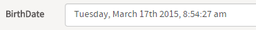
Note: If the user needs to edit the hours and minutes in a datetime control, make sure to include hours and minutes in the format. For example, a format of YYYY-MM-DD hh:mm A will allow the user to directly edit the time in datetime field.
In addition, a icon will be added at the bottom of the date picker dialog if the format includes hours, minutes, seconds or AM/PM. Clicking on it will change the dialog to select the time units in the format:
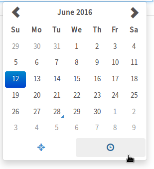 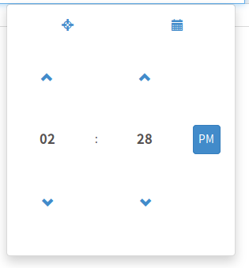
About hh:mm
If the following format is set in this property:
Notice that the hour picker can NOT differentiate between "a.m." and "p.m." by itself. Therefore, if the user selects 17:00 with this configuration, it will be written as 05:00 because of the format of the hh token. To avoid ambiguity and differentiate between "a.m." and "p.m.", add the meridian definition:
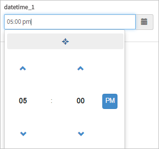
^(19[0-9]{2}|20[0-9]{2})-(1[0-2]|0[1-9])-(0[1-9]|[12][0-9]|3[01])( [0-5][0-9]:[0-5][0-9]){0,1}$
Min Date
This property prevents users from making date/time selections before the date set in this property. By default, this property is not set, so no restriction is made to dates. Select the minimum date from the calendar shown by clicking on the calendar icon at the right side of the box of the property.
For example, when setting the minimum date to 03/12/2015:
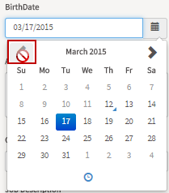
As shown in the image, the dates before "03/12/2015" are not enabled and it is not possible to jump to February. If attempting to so that, the mouse cursor shows a prohibited sign.
Max Date
This property prevents users from making date/time selections after the date set in this property.By default, this property is not set, so no restriction is made to dates. Select the maximum date from the calendar shown by clicking on the calendar icon at the right side of the box of the property.
For example, when setting the maximum date to 03/17/2015:

As shown in the image, the dates after "03/17/2015" are not enabled and it is not possible to the next months. If attempting to so that, the mouse cursor shows a prohibited sign.
Initial Selection Date
This property defines the initial date/time that will be added in the value of the control when the DynaForm is rendered and the datepicker is opened the first time. When this property is set as "true", it sets the date picker with the current date and time.
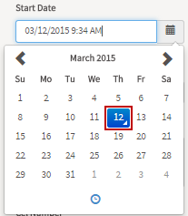
The other options of this property are the following:
- Year: It shows the datepicker and fills the box with the first day of the first month of the current year.
- Month: It shows the datepicker and fills the box with the first day of the current month.
- Day: It shows the datepicker and fills the box with the current day.
- Hour: It shows the datepicker and fills the box with the current hour (it is necessary to configure the format to show also hours ).
- Minute: It shows the datepicker and fills the box with the hour and minute (it is necessary to configure the format to show also hours and minutes).
Default Date
This property sets the default date and time when using the date picker.
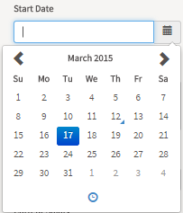
This property is not set by default. To set a default date, enter it manually (taking care of the format) or, to not make mistakes, click on the calendar at the right side of the box of this property and select the default date from the datetime picker
Datepicker View Mode
This property sets the default view to display when the picker is shown. The possible values of this control are described below.
- "Days" Shows the date picker by days.
-
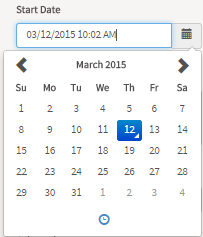
- "Months" Shows the date picker by months.
-
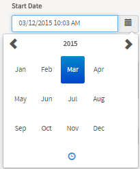
- "Years" Shows the date picker by years.
-
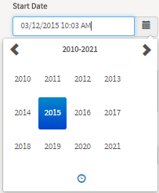
This property is set by default with "Days".
Show Clear Button
This property shows the "Clear" button in the icon toolbar (represented by a garbage icon). When this button is clicked it will set the calendar to null.
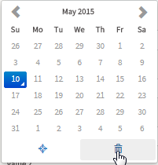
Datetime Control Example
For this example add a "Datetime" control by simply dragging and dropping it into the Dynaform canvas from the Web Control located on the left panel.
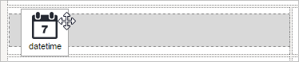
After adding the control notice that immediately a new window will pop up. This window is the Create Variable window where a variable for the control can be created. For this example create a variable named "date1". Then click on the "Save" button to store the variable to the control
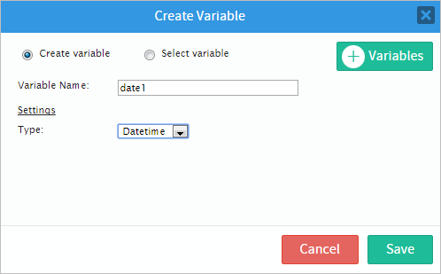
After the variable has been created and added click on any empty space of the control to display its properties on the left hand panel. Notice that the "variable", "variable data type" and "id" properties have the values of the variable.
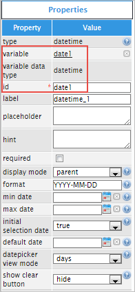
For the control to have a proper name instead of "datetime_1", changed the label (for this example) to "Current Date" as seen in the image below.
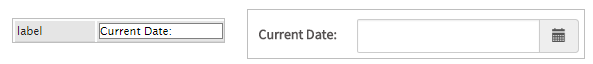
Next is the "placeholder" property which adds text into the control that is used as help to fill the field. For example add the following text: "Add the current date" and the image below shows that the control will show this text until a value is added.

The "hint" property is used to show help by adding an icon on the right side corner of the control. An example text for showing help can be the following: "Select the current date". As seen in the image below when running a case there will be an icon next to the control, hover the pointer of the mouse to display the hint added.

The next property is the "required" property which adds an asterisk in the label to indicate that the field is required therefore when running a case and if/when an option isn't selected then an error message will be displayed (This field is required).
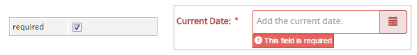
The "display mode" property has different options and each of those options can make the following alterations to the control:
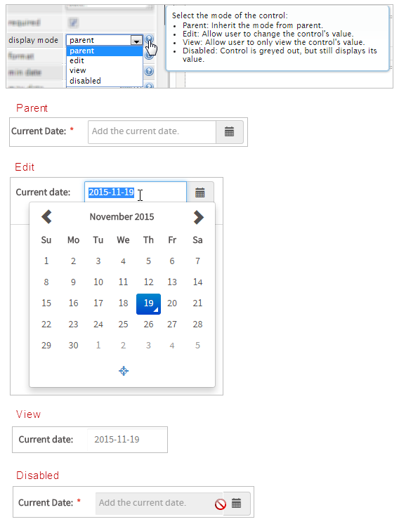
The following field is the "format" property which will define the display format of the date. By default it is set to show the year, then the month and finally the day but there are several options that can be added. Hover your mouse over the questions mark icon to learn more about it or read more about this in the following page. For this example try adding the following text to the "format" property: "dddd, MMMM Do YYYY, hh:mm:ssa"; this will show the day of the week, the current month, the date and the time. Observe the results in the image below.
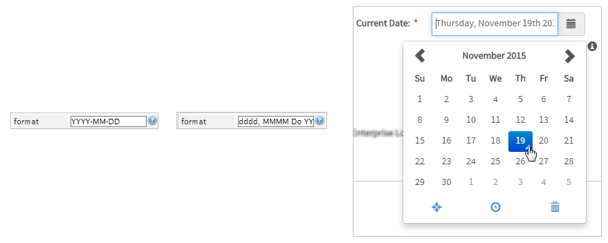
Next, the "min date" property defines the minimum valid date. This can be set by clicking on the calendar of the control and choosing which will be the minimum valid date shown when running a case. For example if the first day of November is chosen then when running a case the control won't show a date before November 1st. and if the user tries to pick a date before November it is not going to be possible. As seen in the image below the arrow to go back a month will appear as disabled.
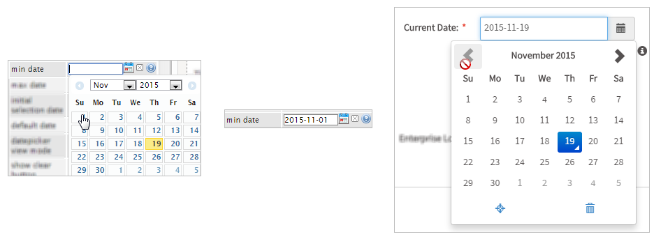
The "max date" property is similar to the "min date" property but it defines maximum valid date that can be chosen. For example, choose the last day of November as maximum valid date and when running the control won't show a date after November and the arrow to go forward a month will appear as disabled.
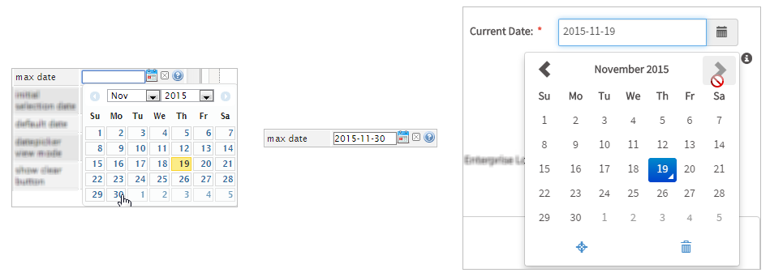
Moving on, the "initial selection date" property defines the initial selection date that display the datepicker. By default is set on true which does not make any bigger changes to the control. Learn more about how to use this property by clicking on the question mark icon.
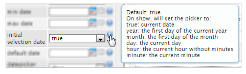
The first change that can be done in the "initial selection date" property is choosing the "year" option which will show the first day of the current year as observed in the image below.

The second change in the "initial selection date" property can be choosing the "month" option which will show the first day of the current month.

The third change in the "initial selection date" property can be choosing the "day" option which shows the current day as seen in the image below.
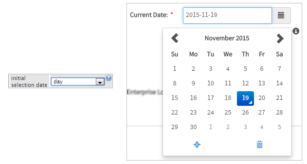
Note: For the moment the options "hour" and "minute" do not have the proper functionality but they will be fixed for next versions.
After this comes the "default value" property which defines the default date in the field. Click on the small calendar icon in the property to choose a default date and this date chosen will be shown automatically when running a case as observed in the image below.
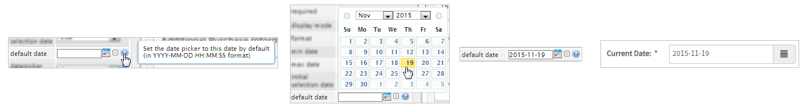
The "datepicker view mode" property will select the default view to display when the picker is shown and can select days, months or years. For this example, try one by one. The default is set to days and it is shown as the image below.
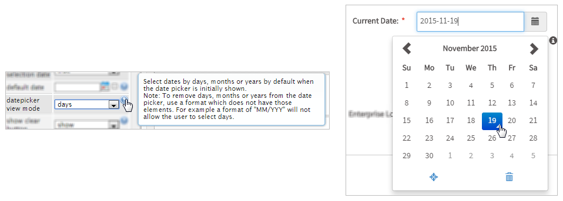
Choose the "datepicker view mode" to "months" and observe the results in the image below.
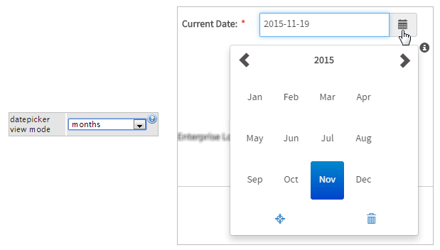
Then, change it to "years" and observe the alterations made in the control.
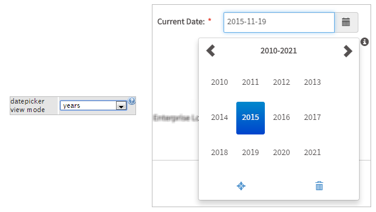
Now the "show clear button" property is the final one in the Datetime list of properties. This property provides two options which are:
- Show: Shows the "Clear" button when choosing a date which looks like an small garbage can. Clicking the "Clear" button will set the calendar to null.
- Hide: It won't show the "Clear" button in the control.
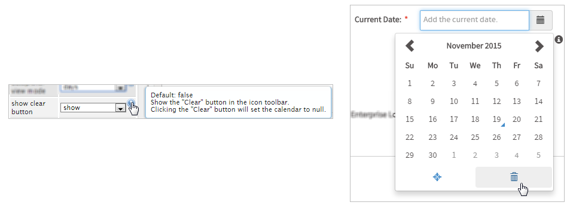
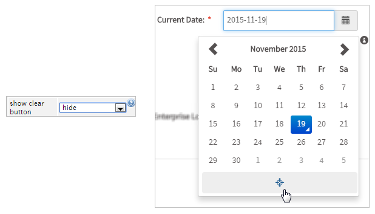
JavaScript in Datetimes
To learn how to manipulate DynaForm controls using JavaScript, see JavaScript in DynaForms.
Datetime controls in ProcessMaker 3 have the following field components:
- Label: The text displayed above or to the left of the field to identify it to the user.
- Text: The datetime displayed to the user, as configured by the format property.
- Value: The stored value for the field in standard "YYYY-MM-DD" format for dates and "YYYY-MM-DD hh:mm:ss" format for datetimes. Examples: "2010-01-01", "1999-07-25 04:01:01", "2015-12-31 23:59:59"
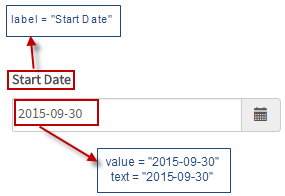
JavaScript Methods
Some of the JavaScript methods to manipulate datetime controls include:
| Method | Description |
|---|---|
jQuery("#fieldID").getControl() |
Use this function to obtain the control's input field, rather its DIV which is obtained with |
jQuery("#fieldID").disableValidation() |
Disable the validation of the field, so it doesn't check whether the field is required when the form is submitted. |
jQuery("#fieldID").enableValidation() |
Enable validation of the field, so it will check whether the field is required when the form is submitted. |
jQuery("#fieldID").getValue() |
Returns the stored datetime of the field in "YYYY-MM-DD hh:mm:ss" format. |
jQuery("#fieldID").getText() |
Returns the displayed text of the datetime in the configured format. |
jQuery("#fieldID").getLabel() |
Returns the field's label, which is the text displayed above or to the left of the field to identify it. |
jQuery("#fieldID").setValue("newValue") |
Sets a new value in the field. Make sure to "YYYY-MM-DD" format for dates and "YYYY-MM-DD hh:mm:ss" format for datetimes. |
jQuery("#fieldID").setText("newText") |
Sets a new text in the field, which is the displayed datetime. The datetime should be in the same format as configured by the format property. |
jQuery("#fieldID").setLabel("newLabel")
|
Change the field's label, which is the text displayed above or to the left of the field to identify it. |
jQuery("#fieldID").setOnchange(function(newVal, oldVal){...}) |
Define a change event handler, which is a custom function that executes after the value of the
field changes. The function may contain the following parameters:
|
To see code examples for these methods, see JavaScript Functions and Methods.
Note: The setValue() method cannot be used to clear the value of a datetime control. See this workaround for clearing datetime controls with JavaScript.
Getting Datetimes
The value of datetime controls is stored as a string in the format "YYYY-MM-DD HH:mm:ss", such as "1999-12-31 23:59:59" or "2017-01-15 08:25:03". Use the getValue() method to get the value of a datetime control. The value always uses the same format.
In contrast, the getText() method will return the formatted date which is displayed to the user. What is displayed in the datetime control is set by its format property. For example, a datatime using a format of "MM/DD/YY" might have a value of "2017-08-26 00:00:00" and a displayed text of "08/26/17".
If the hours, minutes, and/or seconds are not included in the datetime's format property, then they will automatically be set to zeros. For example, a datetime with the format "D-M-YYYY h:m a" might have a value of "1980-07-04 16:15:00" and a displayed text of "4-7-1980 4:15 pm". Note that the seconds are set to "00" because they aren't included in the format. For example, to get the value and displayed text of a datetime control whose ID is "dueDate":
var dueText = $("#dueDate").getText();
Setting Datetimes
The setValue() method is used to set a datetime. Make sure that the datetime is in the "YYYY-MM-DD HH:mm:ss" format. The hours, minutes and seconds are optional and will be set to 00 by default if not included. For example, to set datetime controls, which have the IDs "startDate", "endDate" and "pauseDate":
$("#endDate").setValue("2017-11-01 17:30");
$("#pauseDate").setValue("2017-10-25 08:15:50");
The setText() method can also be used to set the value of a datetime control. The new datetime should either be in standard "YYYY-MM-DD HH:mm:ss" format or in the custom format set by the control's format property.
Manipulating Datetimes with moment.js
It is possible to manipulate datetime strings in JavaScript by converting them into Date objects, but it is much easier to use the moment.js library, which is included in ProcessMaker Desktop, ProcessMaker Mobile for iOS and ProcessMaker Mobile for Android. Read the moment.js documentation to learn about the functions included in its library.
To use a function in the moment.js library, first instantiate a moment object. The moment object can be instantiated by using a datetime string in "YYYY-MM-DD HH:mm:ss", "YYYY-MM-DD HH:mm" or "YYYY-MM-DD HH:mm:ss" format.
var endJanuary = moment("2018-01-31");
var endYear = moment("2018-12-31 23:59:59");
moment object using a datatime string which uses a different format, set the format in the second parameter:
"YYYY-MM-DD HH:mm:ss" format, it not necessary to specify the format of the datetime string. The following example instantiates a moment object with the value in a datetime field whose ID is "dueDate":
var currentTime = moment(due);
moment object into a datatime string which can be set in a datetime field. For example, to set a datetime field with the ID "today" to the current time:
$("#today").setValue(now);
Comparing datetimes
The moment.js library provides a number of functions for comparing datetimes, such as .isBefore(), .isAfter(), .isSame() and .fromNow().
Example - Time from current date:
The code below retrieves how much time exists between an specific date entered by the user and the current date.
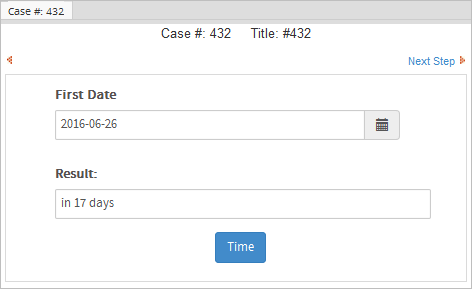
Example - Comparing two dates:
The following example compares two instances of DateTime and returns an alert message that indicates whether the first date is earlier than, the same as, or later than the second date.
var startDt = $('#datetimeVar').getValue();
var endDt = $('#datetimeVar2').getValue();
if (moment(startDt).isBefore(endDt)){
alert('1rst Date is earlier than 2nd date.');
}
else if(moment(startDt).isAfter(endDt)) {
alert('2nd date is earlier than 1rst date.');
}
else if(moment(startDt).isSame(endDt)) {
alert('Both dates are the same.');
}
}
$('#button0000000001').find("button").click(comparingDates);
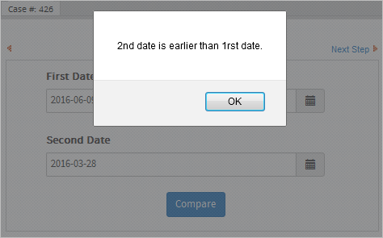
The following code does the same thing using Date and .getTime() to manipulate the dates and converting date strings into Date objects. Nevertheless, take into consideration that the example below does not work with ProcessMaker Mobile for iOS, because Safari does not recognize the ISO format returned by the method .getValue().
Example:
var startDt = $('#datetimeVar').getValue();
var endDt = $('#datetimeVar2').getValue();
var newstartDt = startDt.replace(/ /g,'T');
var newendDt = endDt.replace(/ /g,'T');
if (new Date(newstartDt).getTime() < new Date(newendDt).getTime()) {
alert('1rst Date is earlier than 2nd date.');
}
else if (new Date(newstartDt).getTime() > new Date(newendDt).getTime()) {
alert('2nd date is earlier than 1rst date.');
}
else if (new Date(newstartDt).getTime() == new Date(newendDt).getTime()) {
alert('Both dates are the same.');
}
}
$('#button0000000001').find("button").click(comparingDates);
Adding days to a datetime
Moment.js's .add() and .subtract() methods can be used to add or subtract units of time from a datetime.
In the following example, when the value in the "start_date" field is changed, 2 months are automatically added to its value and set in the "end_date" field:
var endDate = '';
if (startDate != '') {
endDate = moment(startDate).add(2, 'months').format("YYYY-MM-DD HH:mm:ss");
}
$("#end_date").setValue(endDate);
}
//execute when value of the "start_date" changes:
$("#start_date").setOnchange(setEndDate);
//execute when the DynaForm loads:
setEndDate($("#start_date").getValue(), '');
Accessing Datetimes with PHP
When a DynaForm is submitted, its datetimes will be stored as strings in the associated case variables, which then can be manipulated with PHP code in a trigger.
For instance, if a DynaForm datetime is associated with the orderDate variable, then it can be accessed in a trigger as the case variable @@orderDate. If a trigger sets the case variable @@orderDate beforehand, then the datetime control associated with that variable will display its value when the DynaForm is displayed.
For example, to set the value of a datetime control associated with the orderDate variable to the current date, create a trigger which fires before the DynaForm and use the ProcessMaker function getCurrentDate() to set the date:
Likewise, the value entered into a DynaForm data field can be read in a trigger fired after the DynaForm is submitted:
In addition to getCurrentDate(), ProcessMaker provides the custom function getCurrentTime() to return the current time as a string. If the option is selected to also use the time (HH:mm:ss) in a date field, then a date and its time can be set by concatenating the strings returned by the two functions:
A datetime's value is stored as a string in the control's associated case variable in the standard "YYYY-MM-DD HH:mm:ss" format, such as "2017-01-25 23:59:59". If the format property of the datetime control does not contain hours, minutes and/or seconds, then these elements will be set to 00, such as "2017-01-25 00:00:00". This is the same format which is used by the MySQL database to store datetimes.
Comparing Datetimes with PHP
If doing simple comparisons of strings, such as testing whether a date is before, after or equal to another date, then the two dates can be compared as strings. For example:
...
}
Converting Datetimes to Timestamps
To do more advanced operations with datetimes, it is necessary to first convert the datetimes to a PHP timestamp, which is the number of seconds between the current datetime and January 1, 1970 00:00:00 GMT. Use the PHP strtotime() function to convert a datetime from a string to a timestamp. For example, to convert @@orderDate to a timestamp:
The strtotime() function can convert any date stored in the standard "YYYY-MM-DD" format. If working with other types of date strings, then reorder the date string to one of the formats below which strtotime() understands:
| Format | strtotime() example |
|---|---|
| YYYY Month DD | strtotime("2000 March 15") |
| DD Month YYYY | strtotime("15 March 2000") |
| Month DD, YYYY | strtotime("March 15, 2000") |
| Mon DD, YYYY | strtotime("Mar 15, 2000") |
| MM/DD/YYYY | strtotime("03/15/2000") |
| MM/DD/YY | strtotime("03/15/00") |
| YYYY/MM/DD | strtotime("2000/03/15") |
| DD-MM-YYYY | strtotime("15-03-2000") |
| YY-MM-DD | strtotime("00-03-15") |
| YYYY-MM-DD | strtotime("2000-03-15") |
If separating the elements with a "/" (forward slash), strtotime() expects an English-style date, whereas a "-" (hyphen) indicates an international-style date. strtotime() also accepts relative dates, which count from the current time. Use a positive or negative number followed by the unit of time (seconds, minutes, hours, days, weeks, months, years):
If the date should be relative to a time other than the present, then provide a timestamp as the second parameter:
After converting to timestamps, dates can be compared.
Example - Charge 15% more for any delivery which is after the due date
If designing a process that charges 15% more for any delivery after the due date, then use strtotime() to convert the delivery date and the due date to timestamps and then check whether the delivery date is greater than the due date:
@%charge = @%charge + @%charge * 0.15;
}
This trigger code will send out a message only if the due date is today:
PMFSendMessage(@@APPLICATION, "boss@acme.com", "lazyemployee@acme.com", "", "",
"Deliver it TODAY!!!", "duetodaymessage.html");
}
Example - Calculate the difference between two dates in days
Timestamps are in seconds, so subtracting one time stamp from another will yield the difference in seconds. In order to get the difference in days, divide by 24 hours times 60 minutes times 60 seconds:
$days = ($timestamp1 - $timestamp2) / (24*60*60)
The following example compares two datetimes and returns the number of days between them. After that, it inserts both datetimes and the result into a PM Table named "PMT_MY_TABLE" using the executeQuery() function.
$date1 = strtotime(@@date1);
$date2 = strtotime(@@date2);
$days = ($date2 - $date1) / (24*60*60);
$sql = "INSERT INTO PMT_MY_TABLE (DATE1, DATE2, DAYS_DIFFERENCE) VALUES ('$date1', '$date2', $days)";
executeQuery($sql);
}
To round the number of days, the round() function can be used.
To calculate the number of days without considering the time, the time can be removed from the datetimes with the substr() function.
Example - Calculate the difference between the first day of the year and the present day
The following code example calculates the number of days that have passed from the first day of the current year until the present day:
Example - Calculate the difference between the present day and a datetime
The following code example calculates the difference between the present day and a datetime selected by the user, in days, hours, minutes and seconds.
$dueDate = strtotime(@@dueDate);
$present = strtotime("now"); //present date and time
$overdue = $dueDate - $present;
$days = (int) ($overdue / (24*60*60));
$remainder = $overdue % (24*60*60);
$hours = (int) ($remainder / (60*60));
$remainder = $remainder % (60*60);
$minutes = (int) ($remainder / 60);
$seconds = $remainder % 60;
@@timeOverdue = empty($days) ? '' : $days .' days';
@@timeOverdue .= (empty(@@timeOverdue) ? '' : ' ') . "$hours:$minutes:$seconds";
}
Extracting Datetime Information
PHP's getdate() function is useful for pulling particular information out of a timestamp. getdate() returns an associative array with the number of "seconds", "minutes", "hours", "mday" (day of the month), "wday" (day of the week), "mon" (month), "year", and "yday" (day of the year), plus a textual representation of the "weekday" and the "month". For instance, to send out a message if the due date is in the current month:
Converting from Timestamps to Datetimes
After converting to a timestamp, use PHP's date() function to convert a timestamp back to a string which can be displayed in a DynaForm datetime control or be inserted into an Output Document or email template. To convert a timestamp to the "YYYY-MM-DD" or "YYYY-MM-DD HH:mm:ss" format used by ProcessMaker in datetime controls and the MySQL database, use:
- date('Y-m-d', $timestamp)
- or
- date('Y-m-d H:i:s', $timestamp)
For example, to add 10 days to the due date, which will be redisplayed in a subsequent DynaForm:
Formatting Datetimes in English
date() can also be used to create textual representations of datetimes. For example, to create a datetime in a format like "Tuesday, March 15, 2010":
Formatting Datetimes in Other Locales
To create a textual representation of a date in a language other than English, use the strftime() function. It will format the datetime in the language of the locale of the ProcessMaker server. To specify a different locale, such as "pt" (Portuguese), "pt_BR" (Portuguese from Brazil), or "pt_BR@UTF-8" (Portuguese from Brazil in the UTF-8 character set), use PHP's setlocale(). For instance, to output today's date in Spanish:
To set the locale to the language of the current ProcessMaker user:
Note that the selected locale must also be installed on the ProcessMaker server.
To add locales in Debian/Ubuntu, use the command as root:
In Red Hat/CentOS/Fedora, go to System > Add/Remove Packages. In the Package Manager, go to the Browse tab and select the Languages. Then click on the desired language and install it.
If multiple languages are installed in Microsoft Windows, then use setlocale() to select the language. See this list of supported Microsoft locales.
Dynamic datetimes using variables
The default date, min date, and max date properties used by a datetime control can be set dynamically by using case variables. The properties of the datetime control will be set according to the variables (as long as these variables are set in a prior trigger or in fields in a prior DynaForm). The variables should use the format "YYYY-MM-DD" or "YYYY-MM-DD HH:MM:SS", such as "1999-01-01" or "2016-12-31 23:59:59".
Example setting to the current datetime:
A datetime control whose variable is named "currentDate" needs to be set to the current datetime. First, create a trigger which is set to fire before the DynaForm, which uses the getCurrentDate() and getCurrentTime() functions to set the current datetime in YYYY-MM-DD HH:MM:SS format:
When the DynaForm is loaded, the datetime control associated with the @@currentDate variable will automatically have the current datetime. If the user shouldn't be able to change the value of the datetime field, then set its mode property to disabled.
Example setting 3 relative Dates:
In this example, the @@minDate, @@maxDate and @@defaultDate variables are inserted in the min date, max date, and default date properties, respectively.
The following trigger which executes before the DynaForm sets the three variables. If the user set the @@dueDate variable in a prior DynaForm, the trigger sets min date to the first day of the month of the @@dueDate, the max date to the last day of the month @dueDate and the default date to the middle of the month of the dueDate. If no value was selected for the @@dueDate, then the trigger sets the three variables to the first day, last day and middle day of the next month, respectively:
@@minDate = date('Y-m-01', strtotime('+1 month'));
@@maxDate = date('Y-m-t', strtotime('+1 month'));
@@defaultDate = date('Y-m-15', strtotime('+1 month'));
}
else {
@@minDate = date('Y-m-01', strtotime(@@dueDate));
@@maxDate = date('Y-m-t', strtotime(@@dueDate));
@@defaultDate = date('Y-m-15', strtotime(@@dueDate));
}